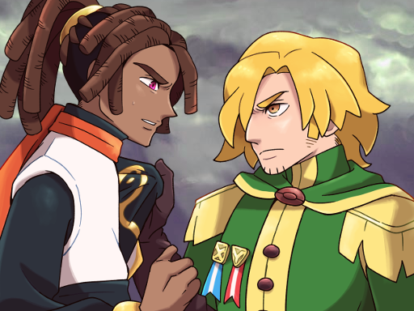

EN CONSTRUCCION ...
Pokémon Z es un fangame ambientado en la región de Kalos, pero en una época muy distinta: el pasado remoto, cuando la región estaba sumida en una guerra devastadora. La historia se desarrolla en una Kalos antigua y más salvaje, donde el poder de los Pokémon legendarios Xerneas, Yveltal y Zygarde está en el centro del conflicto. Juegas como un joven elegido que despierta en medio de esta época turbulenta y es arrastrado a un conflicto entre facciones que luchan por el control de Kalos y de los poderes ancestrales. A diferencia de los juegos tradicionales, aquí no solo se trata de vencer a líderes de gimnasio, sino de sobrevivir en una guerra donde las decisiones tienen peso. Durante el viaje, conocerás personajes históricos, explorarás ruinas antiguas y descubrirás el origen del arma definitiva que aparece en Pokémon X/Y.
- Historia y Jugabilidad increibles!!!
- Actualmente 10 Gimnasios
- 2 Ligas Pokémon
- Pokémon de las 9 generaciones
- Formas regionales
- Megaevoluciones
- Frente Batalla
- Modos de Juego: Normal, Nuzlocke (3 dificultades), Random
- Nuevos Pokémon, Evoluciones y Formas Regionales
Características:
